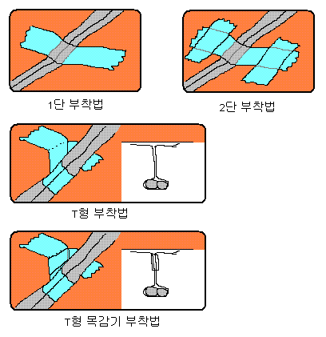

[부착법]
별 얘기 아니다.
*스카치 테잎으로 무언가를 고정시킬 때 좀 더 단단하게 고정시킬 수 있는 방법을 설명한 것이다.
위 그림에서는 대표적인 부착법 두 가지와 각각의 응용을 2가지씩 소개하고 있다.
알다시피 *1단 부착법과 *2단 부착법은 간편하지만 견고하지 못하다.
반창고로 붕대를 피부에 붙일때나 쓰는 것이 좋다.
개인적으로는 *T형 부착법을 주로 사용하고 있다.
*T형 목감기 부착법은 시전시 귀차니즘의 압박이 쇄도하지만 그 결과는 매우 우수해서 그 어떤 풍파에도 잘 떨어지지 않는다.
T형 부착법에는 2단 부착법을 병행하면 그 효과가 극대화된다.
이때 체크 포인트는 덧붙이는 테잎이 중심에 최대한 바짝 붙어 있어야 한다는 점이다.
이것은 T형 목감기 부착법에서도 마찬가지다. 최대한 위쪽에 바짝 감아야 효과를 볼 수 있다.
이 외에도 구체나 복잡한 형태의 다면체를 부착시키는 방법이 존재하지만 그림 그리기도 어렵고 이름 붙이기는 더더욱 까다로와서 이 글에는 소개하지 않는다.
아. 정말 별걸 다 쓴다. -_-..
*스카치(Scatch)는 3M사(社)의 등록상표입니다.
*1단 부착법, 2단 부착법, T형 부착법, T형 목감기 부착법은 필자가 맘대로 붙인 이름입니다.